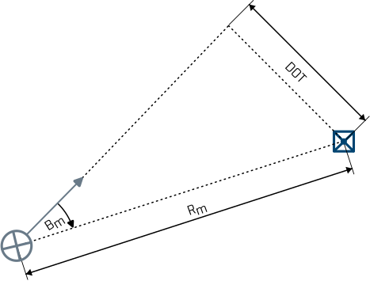
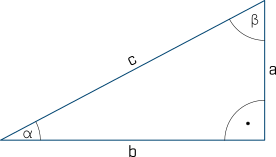
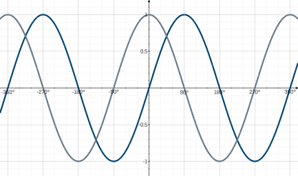

WO-Trainer Uboote HILFE
Auf dieser Seite soll der Distance Of Track - kurz DOT - erklärt und in seiner Bedeutung unterstrichen werden. Er ist für den Überwassermarsch, den Unterwassermarsch und die Sehrohrtiefe gleichermaßen bedeutsam. Hauptanwendung findet er im PEREX, in Bezug auf den Gefahrenkreis eines Fahrzeugs.
Der DOT ist eine Rechengrundlage, die mit Hilfe trigonometrischer Rechenverfahren den Passierabstand im CPA eines Fahrzeugs zu einem stationären Objekt bestimmt. Dabei müssen mehrere Variablen des gedachten Dreiecks bekannt sein. Neben dem Rechten Winkel des Dreiecks muss ein weiterer Winkel, sowie die Entfernung zum Objekt als eine Seite des Dreiecks bekannt sein. Mithilfe dieser zwei Werte zusammen mit der Grundlage des rechtwinkligen Dreiecks lässt sich die Gegenkathete des Dreiecks berechnen - der Abstand zum stationären Objekt im CPA. Dieser Zusammenhang ist in der folgenden Grafik dargestellt:

Abbildung 1: Eigenboot (blau) vor dem Passieren eines staionären Objektes (grau). Die aktuelle Schiffsseitenpeilung $\mathrm{B_m}$ bildet mit der Kursvorrauslinie ein rechtwinkliges Dreieck. Die Hypothenus ist dabei der aktuelle Abstand zum Eigenbook $\mathrm{R_m}$.
Um Verwirrungen vorzubeugen, sei gesagt, dass Ubootfahrer den Begriff DOT sowohl für ihren eigenen Passierabstand zu stationären Objekten wie für den Passierabstand von Fahrzeugen zum Uboot verwenden. Im zweiten Fall wird das Uboot selber als stationäres Objekt in Bezug zum Gegner bewertet. Dies ist natürlich nicht exakt, liefert jedoch eine gute Abschätzung, da in den meisten Fällen der Gegner deutlich schneller ist als das Eigenboot.
Bevor Sie jedoch in den Teilaufgaben die individuellen Berechnungsmethoden des DOT lernen, werden an dieser Stelle die Grundlagen der Trigonometrie wiederholt. Das Verständnis trigonometrischer Zusammenhänge ist die Grundlage des Lagebildaufbaus auf einem Uboot. Das damit einhergehende Kenntnis von Sinus und Cosinus ist nicht nur für die Bestimmung des DOT, sondern ebenfalls für diverse weitere geometrische Größen des Lagebildaufbaus unabdingbar.
Trigonometrie, die Lehre der Winkelmessungen in Dreiecken, kann in jedem Dreieck angewendet werden. Für Ubootfahrer sind im Besonderen die Zusammenhänge in rechtwinkligen Dreiecken relevant.

Abbildung 2: Rechtwinkliges Dreieck mit der Hypothenuse c sowie den Katheten a und b. Die den Katheten gegenüberliegende Winkel sind $\mathrm{\alpha}$ und $\mathrm{\beta}$. Bezogen auf den Winkel $\mathrm{\alpha}$ ist damit a die Gegenkathete und b die Ankathete.
Unter Kenntnis der Länge der Hypothenuse gelten folgende Zusammenhänge zum Bestimmen der An- und Gegenkathete.
Aufgetragen in ein Diagramm verhalten sich Sinus und Cosinus wie folgt:

Abbildung 3: Im Diagramm sind Sinus (blau) und Cosinus (grau) über den Winkel aufgetragen. Auch wenn in einem normalen Dreieck schwer vorstellbar lassen sich Sinus und Cosinus auch für negative Winkel und Winkel > 180° berechnen. Der Wert von Sinus und Cosinus oszilliert dabei immer um 0 und kann maximal 1 und minimal -1 annehmen. Sowohl Sinus als auch Cosinus haben immer nach exakt 360° einen "Durchlauf" abgeschlossen und haben entsprechen wieder den selben Wert. Weiterhin erkennt man direkt, dass Sinus und Cosinus nahezu identisch sind. Der einzige Unterschied ist, das Cosinus um exakt 90° zu Sinus verschoben ist.
Die exakten Werte von Sinus und Cosinus können an den meisten Stellen nicht berechnet werden, da sie irrational sind. Das bedeutet, dass unendlich viele Stellen nach dem Komma existieren. An genau drei stellen innerhalb von 90° sind die Werte von Sinus und Cosinus exakt. Diese Werte wiederholen sich dann immer wieder
| $\mathrm{\alpha}$ | $\mathrm{\sin{\alpha}}$ | $\mathrm{\cos{\alpha}}$ |
|---|---|---|
| 0° | 0 | 1 |
| 30° | 0,5 | irrational |
| 60° | irrational | 0,5 |
| 90° | 1 | 0 |
Wie man an diesem Beispiel der rationalen Ergebnisse von Sinus und Cosinus in Verbindung mit Abbildung 2 direkt erknennen kann, muss folgender Zusammenhang gelten:
Damit Sie in Zukunft nicht mehr verwechseln, ob Sie die Gegen- oder Ankathete mit dem Sinus oder Cosinus berechnen müssen, nutzen Sie folgende Eselsbrücke.
Merken Sie sich:
Zum Sin muss ich hin (Gegenkathete).
Der Cos sitzt auf dem Schoß (Ankathete).